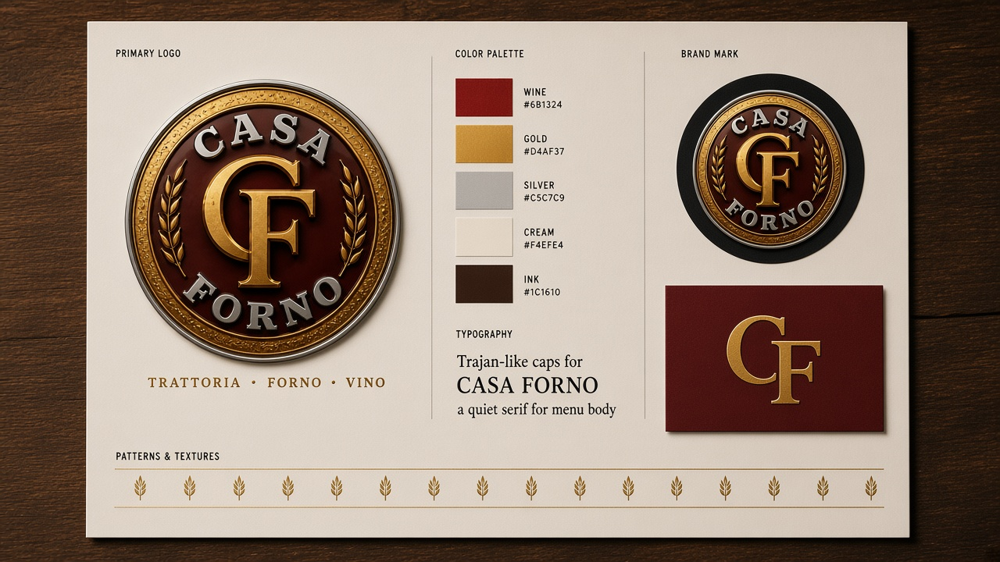
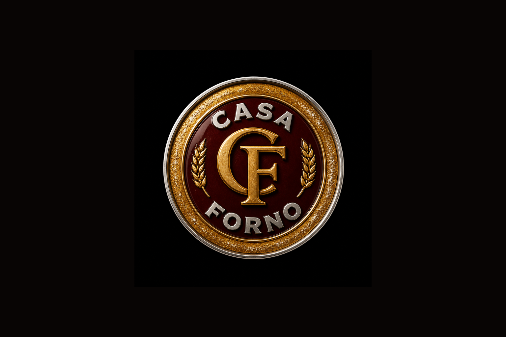
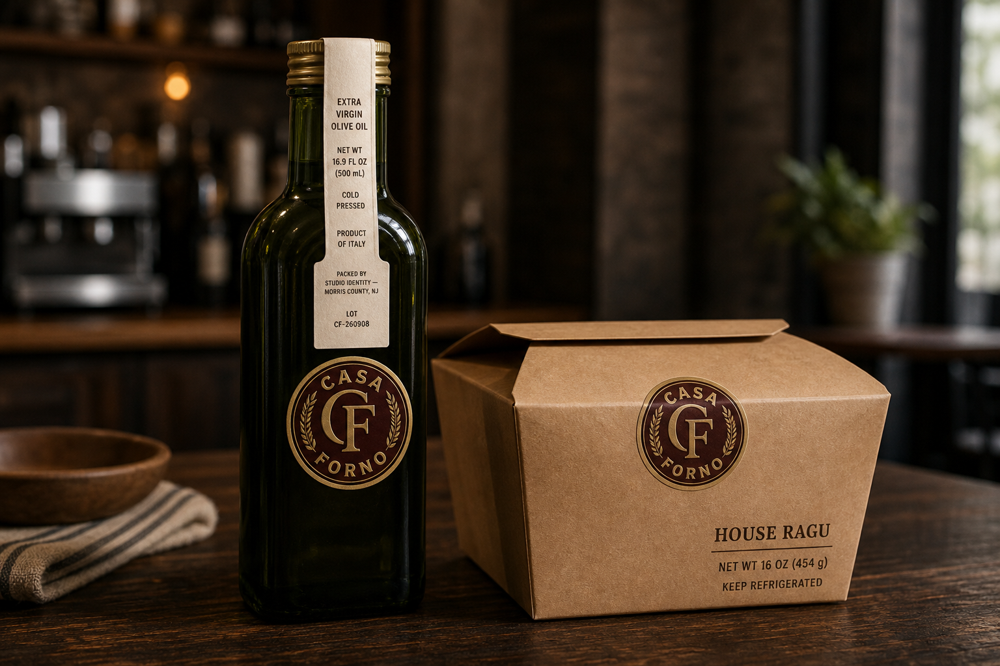
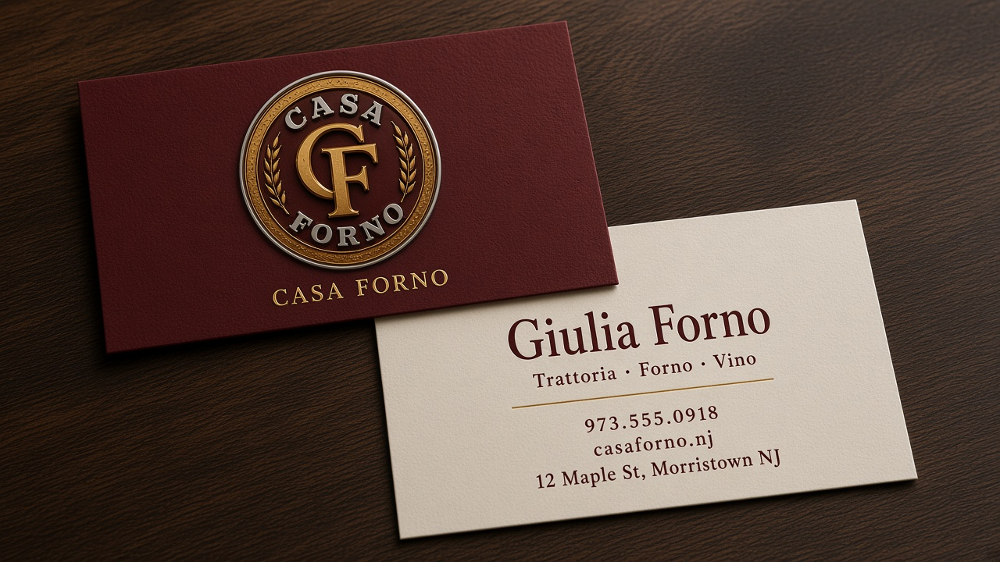
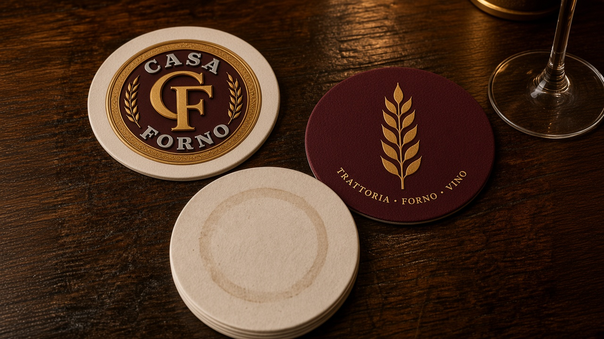
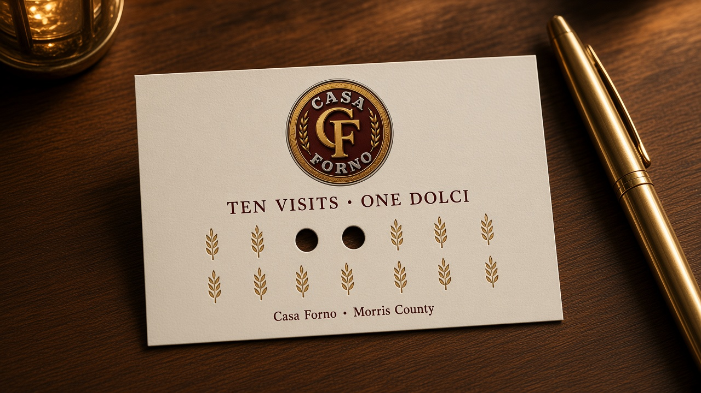
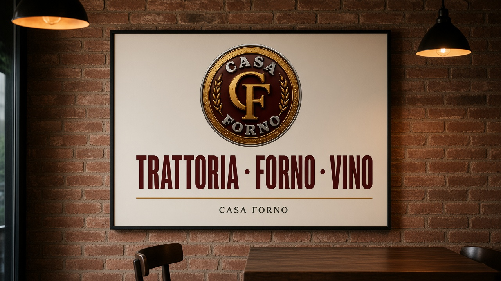
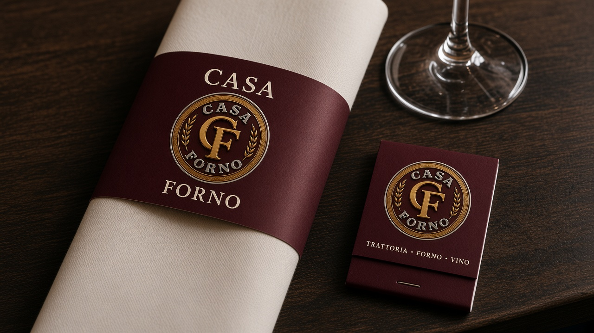
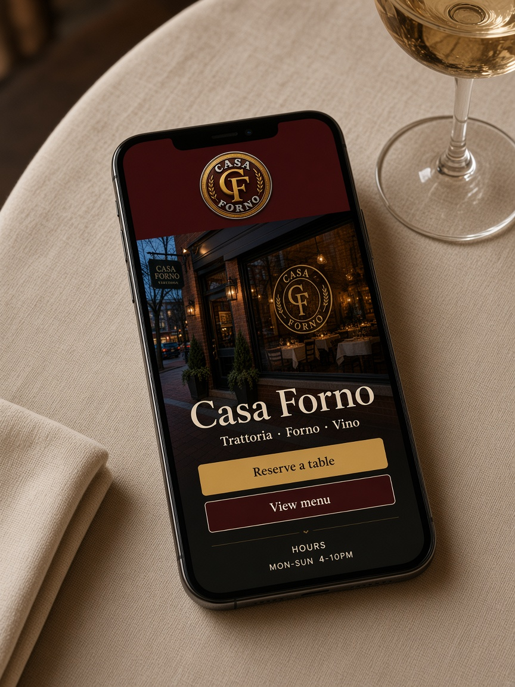

Sit down, write it back, draw, build — then the seal, the window, the oil, and the phone. Trattoria · Forno · Vino.
Identity Italian trattoria — studio system
Services Identity · process · menu · window · packaging · website
Year 2026
Place Morris County, NJ
The seal starts from the Cafe Robust badge the studio already prints: a circular gold lockup, arched name, a center monogram. Casa Forno rewrites that language for a room with an oven. CF in gold. CASA / FORNO in silver. Wheat instead of stars. Wine enamel instead of espresso. An olive-oil ring instead of crema.
No Italian flag. No clipart pizza. The food is inside. Trattoria · Forno · Vino sits under the seal so the sidewalk, the menu, and the oil bottle agree. This is a studio identity, not a live account.
Full process
From the oven to the oil
A trattoria system written for a room with an oven. Sit at the two-top, write Trattoria · Forno · Vino, draw the CF seal, then put that badge on glass, the cream list, the oil bottle, and the phone.
01 · Sit downBrick, linen, a wood oven
The sidewalk should know the room before the door. First conversation is who stays for primi, who takes ragù home, and what has to live on glass in gold — not a flag, not clipart pizza.
02 · Write it backTrattoria · Forno · Vino
The brief: wheat instead of stars, wine enamel instead of espresso, an olive-oil ring instead of crema. The food is inside. The line under the seal has to agree with the menu and the bottle.
03 · DrawGold CF, silver arcs
Official circular seal: gold CF, silver CASA / FORNO, wheat at the sides, wine-burgundy plate. Trajan-like caps for the name. Quiet serif for the list. Gold rules, cream stock.
04 · BuildSeal, room, pack, phone
Dusk window, cream menu (primi · secondi · dolci), oil and ragù, cards, coasters, loyalty, poster, matchbook, and a homepage that uses the same wine and gold. Studio identity — not a live account.
The kit
Mark, color, type

CasaForno
Trajan-like caps for the seal. Quiet serif for primi, secondi, dolci. Wine plate, gold CF, silver arcs, wheat at the sides. Cream stock, gold rules.
Wine#6B1324
Gold#D4AF37
Silver#C5C7C9
Cream#F4EFE4
Display — Trajan-like caps
CASA FORNO
Seal, window vinyl, poster. Never a paragraph of specials.
Body — quiet serif
Primi, secondi, dolci. Prices in a column. The kitchen is twenty feet away — no food photos.
Brand system
Wheat at the sides, the oven in the name
The mark
The official seal borrows the Cafe Robust badge: gold CF in the center, silver CASA / FORNO on the arcs, wheat instead of stars, a wine-burgundy plate, an olive-oil ring. No flag, no clipart pizza. The food is inside. Trattoria · Forno · Vino sits under the seal so the room, the oven, and the list agree.
On the pack
Oil
Extra virgin · cold pressed · 16.9 fl oz (500 mL)
Pasta
House ragù · 16 oz (454 g)
Keep
Oil: cool, dark. Ragù: keep refrigerated.
Menu
Primi · Secondi · Dolci
Line
Trattoria · Forno · Vino
Lot
CF-260908
Packed
Studio identity — Morris County, NJ
Print system
The seal, then the room
Official CF badge on black. Gold vinyl on the dusk window. Cream menu with primi, secondi, dolci. Oil, ragù, cards, coasters, loyalty, poster, and matchbook carry the same wine and gold.

Seal The official lockup. Gold CF, silver CASA / FORNO, wheat at the sides. Same badge language as Cafe Robust, rewritten for the oven.Window Gold seal on glass, cream hours, hanging wordmark. The sidewalk should know the room before the door.Menu Cream stock, wine headings, gold rules. No food photos: the kitchen is twenty feet away.

Oil and box Same seal on green glass and kraft. Extra virgin 500 mL, house ragù 16 oz, lot CF-260908.

Business cards Wine field is the plate, gold CF is the window stamp in a pocket. Cream reverse sits next to the menu. A name, a phone, a street.

Coasters The seal in the center so a glass still frames the mark. Wine and wheat on the reverse so the table stays on-brand when a coaster is flipped.

Loyalty card Ten visits, one dolci. Wheat punches instead of circles so every return restates the seal.

Dining-room poster The line is the only copy besides the seal. Dining-room scale of the window lettering. Cream sheet, wine ink, one gold rule.

Napkin band and matchbook Wine band around cream linen. The matchbook is a pocket version of the poster line. Same seal, small enough to leave with a guest.
In the hand / on the phone
Window, pack, homepage

Gold seal on glass. Oil and ragù carry weight, keep, and lot. The homepage uses the same wine and gold as the menu. Studio identity — Morris County, NJ.
Let’s sit down
Every business is a different problem. Invite us to the restaurant — we will eat, write back what we heard, then build a system for that room, not a layout reused from the last shop.